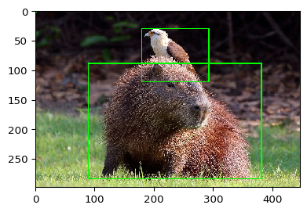
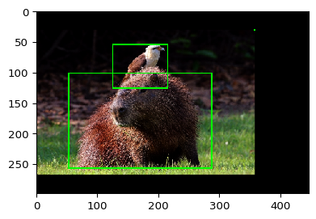
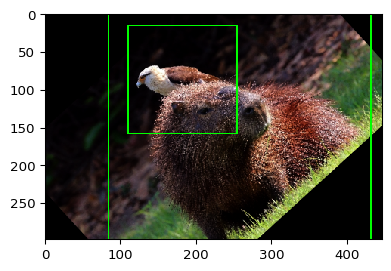
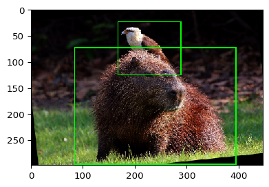

[2]:
import imageio
import imgaug as ia
from imgaug import augmenters as iaa
from imgaug.augmentables.bbs import BoundingBox, BoundingBoxesOnImage
from imgaug.augmentables.batches import Batch
import numpy as np
import matplotlib.pyplot as plt
Data Augmentation¶
In order to make the model not overfit on the dataset we need to apply data augmentations techniques. By default extrayolo supports `imgaug <>`__ as data augmentation framework. The example below shows an example of image with 2 bounding boxes.
[3]:
image = imageio.imread("https://upload.wikimedia.org/wikipedia/commons/8/8e/Yellow-headed_caracara_%28Milvago_chimachima%29_on_capybara_%28Hydrochoeris_hydrochaeris%29.JPG")
image = ia.imresize_single_image(image, (298, 447))
bbs = BoundingBoxesOnImage([
BoundingBox(x1=0.2*447, x2=0.85*447, y1=0.3*298, y2=0.95*298),
BoundingBox(x1=0.4*447, x2=0.65*447, y1=0.1*298, y2=0.4*298),
BoundingBox(0,0,0,0)
], shape=image.shape)
ia.imshow(bbs.draw_on_image(image, size=2))

In order to perform data augmentation on the image we can create a pipeline of transformations.
[4]:
pipeline = iaa.Sequential([
iaa.GammaContrast(1.5), # add contrast
iaa.Affine(translate_percent={"x": 0.1}, scale=0.8), # translate the image
iaa.Fliplr(p = 1.0) # apply horizontal flip
])
[5]:
image_aug, bbs_aug = pipeline(image=image, bounding_boxes=bbs)
ia.imshow(bbs_aug.draw_on_image(image_aug, size=2))
bbs_aug.to_xyxy_array()

[5]:
array([[ 53.439987, 101.22 , 285.88 , 256.18 ],
[124.96001 , 53.539997, 214.36 , 125.06 ],
[357.4 , 29.699999, 357.4 , 29.699999]], dtype=float32)
We can see that the images is augmented such as the boxes. Given a set of transformations they can be applied to a batch of images. We create a batch of images
[6]:
images = np.array([image, image])
bbss = [bbs, bbs]
batch = Batch(images=images, bounding_boxes=bbss)
[7]:
pipeline = iaa.Sequential([
iaa.GammaContrast(1.5),
iaa.Affine(rotate=(-90, 90))
])
and perform data augmentation on the batch
[8]:
batch_processed = pipeline.augment_batch(batch)
batch_processed.images_aug.shape
[8]:
(2, 298, 447, 3)
[9]:
for image_aug, bbs_aug in zip(batch_processed.images_aug, batch_processed.bounding_boxes_aug):
ia.imshow(bbs_aug.draw_on_image(image_aug, size=2))
print(bbs_aug.to_xyxy_array())

[[ 84.47671 -0.95089597 429.66367 337.98044 ]
[110.338524 15.286891 253.14641 156.65118 ]
[-41.822052 189.12672 -41.822052 189.12672 ]]

[[ 83.97693 73.39386 393.1003 296.26755 ]
[166.692 23.417078 287.13556 123.95688 ]
[-14.237909 24.003315 -14.237909 24.003315]]
[10]:
def make_augmentations(max_number_augs=5):
augmentation = iaa.SomeOf((0, max_number_augs), [
iaa.GaussianBlur(sigma=(0.0, 3.0)),
iaa.Affine(scale=(1., 2.5), rotate=(-90, 90), shear=(-16, 16),
translate_percent={"x": (-0.2, 0.2), "y": (-0.2, 0.2)}),
iaa.LinearContrast((0.5, 1.5)),
iaa.AdditiveGaussianNoise(scale=(0, 0.05 * 255)),
iaa.Alpha((0.0, 1.0), iaa.Grayscale(1.0)),
iaa.LogContrast(gain=(0.6, 1.4)),
iaa.PerspectiveTransform(scale=(0.01, 0.15)),
iaa.Clouds(),
iaa.Alpha(
(0.0, 1.0),
first=iaa.Add(100),
second=iaa.Multiply(0.2)),
iaa.MotionBlur(k=5),
iaa.MultiplyHueAndSaturation((0.5, 1.0), per_channel=True),
iaa.AddToSaturation((-50, 50)),
iaa.Noop()
])
return augmentation